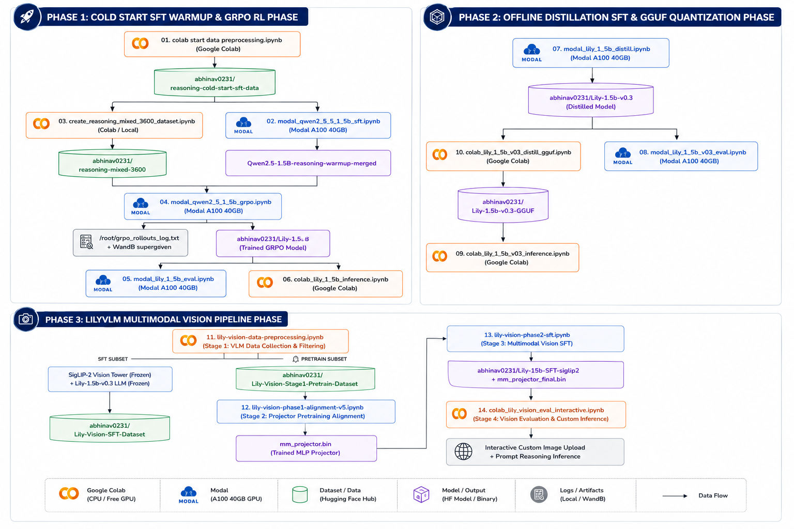
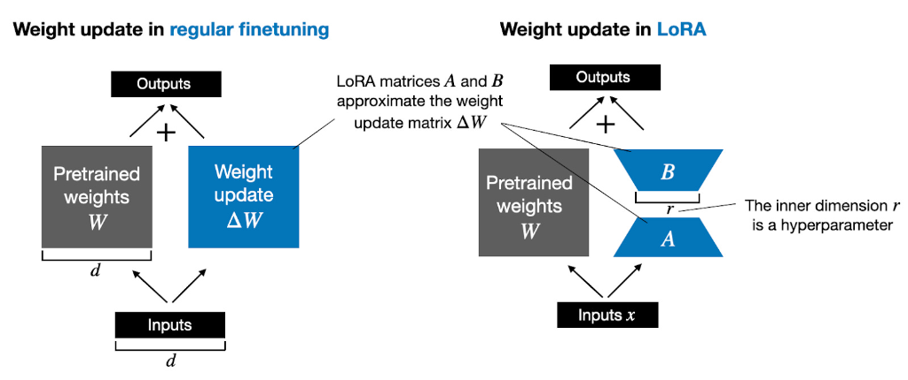
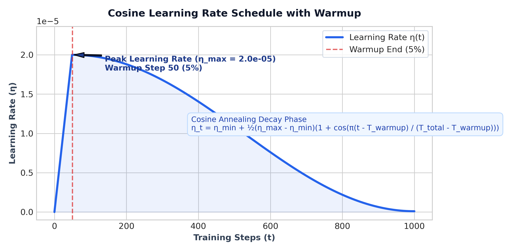
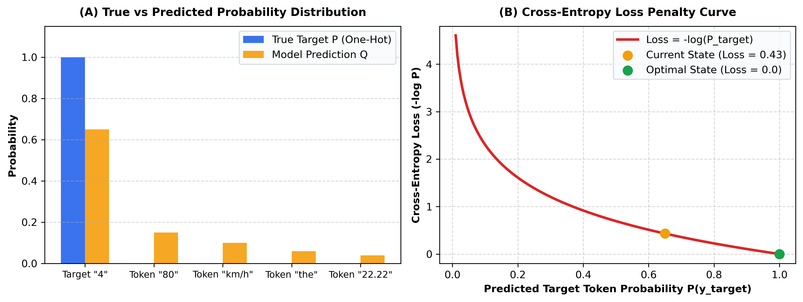

This handbook serves as the definitive technical reference manual for our LLM and Vision-Language Model (VLM) training ecosystem. Synthesized directly from the production code across all 16 notebooks in our codebase, it bridges theoretical deep-learning concepts with real-world implementation technicalities.

[ Phase 1: Text LLM Foundations & SFT Warmup ]
├── 01_cold_start_data_preprocessing.ipynb (Data Curation: ChatML Format, Reasoning Datasets)
└── 02_modal_qwen_2_5_1_5b_sft.ipynb (Warmup SFT: Qwen2.5-1.5B on Modal A100 -> Warmup Merged)
[ Phase 2: Reinforcement Learning via GRPO ]
├── 03_create_reasoning_mixed_3600_dataset.ipynb (Curate 3.6k Multi-Domain Reasoning Dataset)
├── 04_modal_qwen_2_5_1_5b_grpo.ipynb (GRPO RL Training: 4 Domain Rewards, DAPO Clipping -> Lily-1.5B v0.1)
├── 05_modal_lily_1_5b_eval.ipynb (Benchmark Evaluation: lm-eval Harness on Modal A100/L4)
└── 06_colab_lily_1_5b_inference.ipynb (Fast Colab GPU Inference: Unsloth Kernels & Dual-Channel Parsing)
[ Phase 3: Offline CoT Distillation & Text Quantization ]
├── 07_modal_lily_1_5b_distill.ipynb (Offline Distillation: Sarvam-105B -> Lily-1.5b-v0.3 w/ Sequence Packing)
├── 08_modal_lily_1_5b_v03_eval.ipynb (Benchmark Evaluation: lm-eval Harness for Lily-1.5b-v0.3)
├── 09_colab_lily_1_5b_v03_inference.ipynb (Native Transformers Inference & Schema Compliance Auditor)
└── 10_colab_lily_1_5b_v03_distill_gguf.ipynb (llama.cpp Compilation, Jinja Template Patching, K-Quantization)
[ Phase 4: Multimodal Projector Alignment & Pretraining ]
├── 11_colab_lily-vision-pretraining-data-preprocessing.ipynb (Multi-Dataset Alignment Data: LAION, AI2D, ChartQA, DocVQA)
└── 12_modal_lily-vision-projector-pretraining.ipynb (Phase 1 Alignment: SigLIP-2 + MLP Projector Training -> v0.4 Projector)
[ Phase 5: Multimodal SFT, Interactive Eval & Edge Deployment ]
├── 13_colab_lily_vision_sft_data_preprocessing.ipynb (MMR1-SFT + Filtered Sarvam-105B Data Packaging: 64k Samples)
├── 14_modal_lily_vision_sft_training.ipynb (Phase 2 Multimodal SFT: LoRA + Projector Training -> Lily-1.5b-v0.5)
├── 15_colab_lily_vision_eval_interactive.ipynb (Multimodal Evaluation & Gradio/Interactive Colab REPL)
└── 16_colab_lily_vlm_gguf.ipynb (Multimodal llama.cpp Export: LLM Backbone GGUF + SigLIP2 mmproj)
In standard full fine-tuning, an LLM parameter matrix $W_0 \in \mathbb{R}^{d \times k}$ is updated directly via gradient descent ($W = W_0 + \Delta W$). When $d$ and $k$ are large (e.g., hidden dimension $d=1536$ and intermediate MLP dimension $k=8960$ in Qwen2.5-1.5B), updating $\Delta W$ directly requires massive VRAM for storing optimizer states (AdamW requires 8 bytes per parameter for first and second moments).
LoRA parametrizes the weight update matrix $\Delta W$ by decomposing it into two low-rank matrices: $$\Delta W = B \cdot A$$
During forward propagation, the linear layer output $h$ for an input $x$ is computed as: $$h = W_0 x + \Delta W x = W_0 x + \frac{\alpha}{r} (B \cdot A x)$$

In QLoRA, the base model weights $W_0$ are quantized to 4-bit NormalFloat (NF4) precision, while the adapter matrices $A$ and $B$ remain in 16-bit precision (BF16 or FP16). NF4 is an information-theoretically optimal quantile quantization scheme for normally distributed weights: $$q_i = \frac{1}{2} \left( Q_X\left(\frac{i}{2^k}\right) + Q_X\left(\frac{i+1}{2^k}\right) \right)$$ where $Q_X(\cdot)$ is the quantile function of the standard normal distribution $\mathcal{N}(0, 1)$.
Across our codebase (02_modal_qwen_2_5_1_5b_sft.ipynb, 04_modal_qwen_2_5_1_5b_grpo.ipynb, 07_modal_lily_1_5b_distill.ipynb, 14_modal_lily_vision_sft_training.ipynb), we apply LoRA across all 7 linear projection layers of the Transformer architecture:
from unsloth import FastLanguageModel
model = FastLanguageModel.get_peft_model(
model,
r = 32, # Rank: 32 (SFT/Distill/Vision), 64 (GRPO RL)
lora_alpha = 64, # Alpha: 32 (SFT), 64 (GRPO/Distill/Vision)
target_modules = [
"q_proj", "k_proj", "v_proj", "o_proj", # Self-Attention Projections
"gate_proj", "up_proj", "down_proj" # SwiGLU MLP Projections
],
lora_dropout = 0, # 0 is optimized for Unsloth kernel fusion
bias = "none",
use_gradient_checkpointing = "unsloth",
random_state = 42,
)
q_proj (Query Projection): Transforms input hidden states into Query matrices ($Q$) for multi-head self-attention.k_proj (Key Projection): Transforms input hidden states into Key matrices ($K$) for computing attention dot-product scores ($Q K^T$).v_proj (Value Projection): Transforms input hidden states into Value matrices ($V$) carrying contextual token information.o_proj (Output Projection): Projects concatenated multi-head attention outputs back to the model hidden dimension ($d=1536$).gate_proj (Gate Projection in SwiGLU): Computes the element-wise gating signal in SwiGLU feed-forward networks ($\text{Swish}(x W_{\text{gate}}) \otimes x W_{\text{up}}$).up_proj (Up Projection in SwiGLU): Expands input hidden dimension to high-dimensional intermediate space ($1536 \rightarrow 8960$).down_proj (Down Projection in SwiGLU): Contracts intermediate dimension back to model hidden dimension ($8960 \rightarrow 1536$).For Qwen2.5-1.5B ($d_{\text{model}} = 1536, N_{\text{layers}} = 28$): - Total Base Parameters: $1,580,643,840$ (~1.58B) - Trainable Adapter Parameters ($r=32$): $36,929,536$ (~36.9M) - Trainable Ratio: $\frac{36.9\text{M}}{1580.6\text{M}} \approx 2.34\% \text{ to } 4.0\%$
Before running RL (GRPO), performing offline distillation, or exporting to GGUF, adapter weights must be mathematically merged into the base model to eliminate dual-path inference overhead: $$W_{\text{merged}} = W_0 + \frac{\alpha}{r} (B \cdot A)$$
In code (02, 04, 07, 14):
model_m, tok_m = FastLanguageModel.from_pretrained(
model_name = OUTPUT_DIR,
max_seq_length = MAX_SEQ_LENGTH,
dtype = torch.bfloat16, # Full precision BF16 merge
load_in_4bit = False, # Prevents quantization artifacts during merge
)
model_m.save_pretrained_merged(MERGED_DIR, tok_m, save_method="merged_16bit")
model_m.push_to_hub_merged(HF_MERGED_REPO, tok_m, save_method="merged_16bit", token=HF_TOKEN)
A single optimizer step corresponds to one iteration where model weights are updated by the optimizer using calculated gradients.
To fit large models into GPU memory, training datasets are split into smaller micro-batches ($B_{\text{device}}$). When gradient accumulation is enabled ($N_{\text{accum}}$), the engine performs $N_{\text{accum}}$ forward and backward passes, accumulating gradients in VRAM, before executing a single optimizer.step() update.
$$B_{\text{eff}} = B_{\text{device}} \times N_{\text{accum}} \times N_{\text{GPU}}$$
where: - $B_{\text{device}}$: Per-device micro-batch size processed in a single forward pass per GPU. - $N_{\text{accum}}$: Number of micro-batches accumulated before updating model weights. - $N_{\text{GPU}}$: Number of parallel GPUs participating in training.
$$\text{Total Optimizer Steps} = \frac{|\mathcal{D}| \times N_{\text{epochs}}}{B_{\text{eff}}}$$
where $|\mathcal{D}|$ is the number of samples in the dataset and $N_{\text{epochs}}$ is the total number of training passes over the dataset.
| Hyperparameter | SFT Warmup (02) | GRPO RL (04) | Distillation (07) | Vision Phase 1 (12) | Vision Phase 2 (14) |
|---|---|---|---|---|---|
| Base Model | Qwen2.5-1.5B-Instruct | Qwen2.5-Warmup-Merged | Lily-1.5B (v0.1) | Lily-1.5b-v0.3 | Lily-1.5b-v0.3 |
| Dataset Size ($\mathcal{D}$) | 4,000 samples | 3,600 prompts | 91,457 (train) | 121,237 samples | 64,000 samples |
| Epochs / Steps | 2 Epochs (500 steps) | 600 Max Steps | 2 Epochs (2,776 steps) | 1 Epoch (~2,525 steps) | 1 Epoch (~1,333 steps) |
| Per-Device Batch ($B_{\text{device}}$) | 8 | 4 | 24 | 16 | 24 |
| Grad Accum ($N_{\text{accum}}$) | 2 | 4 | 1 | 3 | 2 |
| Effective Batch ($B_{\text{eff}}$) | 16 | 16 | 24 | 48 | 48 |
| Peak Learning Rate ($\eta_{\max}$) | $1 \times 10^{-5}$ | $5 \times 10^{-6}$ | $2 \times 10^{-5}$ | $2 \times 10^{-4}$ | $2 \times 10^{-5}$ |
| LR Scheduler | Cosine | Cosine | Cosine | Cosine w/ warmup | Cosine w/ warmup |
| Warmup Ratio | 0.05 | 0.05 | 0.03 | 0.05 | 0.03 |
| Optimizer | adamw_torch_fused |
adamw_torch_fused |
adamw_torch_fused |
AdamW ($\beta_1=.9, \beta_2=.95$) |
AdamW |
| Weight Decay | 0.01 | 0.0 | 0.0 | 0.05 | 0.01 |
| Max Sequence Length | 3,072 | 3,072 | 4,096 | 256 | 2,048 |
| Sequence Packing | False | False | True | False | False (LengthGrouped) |
| Hardware | Modal A100 40GB | Modal A100 40GB | Modal A100 40GB | Modal A100 40GB | Modal A100 40GB |
We utilize Cosine Annealing with Warmup across all training runs.
$$\eta_t = \begin{cases} \eta_{\max} \cdot \frac{t}{T_{\text{warmup}}}, & t \le T_{\text{warmup}} \[8pt] \eta_{\min} + \frac{1}{2}(\eta_{\max} - \eta_{\min}) \left(1 + \cos\left(\frac{\pi (t - T_{\text{warmup}})}{T_{\text{total}} - T_{\text{warmup}}}\right)\right), & t > T_{\text{warmup}} \end{cases}$$

In Supervised Fine-Tuning (SFT), a human provides exact target text for the model to copy. In Reinforcement Learning (RL), the model must explore and discover reasoning trajectories on its own.
The Job of GRPO: Train the model to maximize verified reward (correct logic, strict formatting, correct answers) while constraining weight updates to be as conservative as possible to prevent policy collapse and reward hacking.
To build complete mathematical and mechanical intuition, we carry one concrete running example through every step of the GRPO algorithm below.
"If a train travels 120 km in 1.5 hours, what is its speed in m/s?"y1 (Perfect CoT & Answer):
"<think>Speed = 120 / 1.5 = 80 km/h. To convert to m/s: 80 * (5/18) = 22.22 m/s.</think><answer>22.22 m/s</answer>"
y2 (Incomplete: stopped at km/h):
"<think>Speed = 120 / 1.5 = 80 km/h.</think><answer>80</answer>"
y3 (Correct Answer, Missing <think> tags):
"22.22 m/s"
y4 (Complete Hallucination):
"<think>120 * 1.5 = 180 m/s</think><answer>180 m/s</answer>"
Each generated rollout $y_i$ is evaluated by our 4 domain-aware reward functions (format_reward, correctness_reward, instruction_reward, length_reward):
Raw Reward Vector: $\mathbf{R = {+1.50, \; -0.10, \; +0.50, \; -0.30}}$
GRPO eliminates the need for a separate Critic / Value Model (saving 50% VRAM) by using the group itself as a baseline benchmark.
$$\mu = \frac{+1.50 - 0.10 + 0.50 - 0.30}{4} = \mathbf{+0.40}$$ $$\sigma = \sqrt{\frac{(1.50-0.40)^2 + (-0.10-0.40)^2 + (0.50-0.40)^2 + (-0.30-0.40)^2}{4}} \approx \mathbf{0.70}$$
$y_{i,t}$ is any token generated by the model during rollout at position $t$ (reasoning text, numbers, symbols, XML tags).
Since completion $y_1$ achieved $A_1 = +1.57$, every single generated token $y_{1,t}$ in $y_1$ (including <think>, 120/1.5, 80, 22.22, <answer>) inherits advantage $A_1 = +1.57$!
During the weight update step, we pass prompt $x$ + completion $y_i$ into the active policy $\pi_\theta$ and measure how the token probability shifted relative to the sampling policy $\pi_{\theta_{\text{old}}}$:
$$r_{i,t}(\theta) = \frac{\pi_\theta(y_{i,t} \mid x, y_{i,\lt t})}{\pi_{\theta_{\text{old}}}(y_{i,t} \mid x, y_{i,\lt t})}$$
To prevent single high-reward rollouts from causing gradient explosions, GRPO applies pessimistic clipping:
$$\text{Clipped Objective}{i,t} = \min \left( r{i,t}(\theta) A_i, \; \text{clip}(r_{i,t}(\theta), 1 - \epsilon_{\text{low}}, 1 + \epsilon_{\text{high}}) A_i \right)$$
To ensure the policy $\pi_\theta$ does not drift into reward-hacking fluff, we subtract a per-token Kullback-Leibler (KL) divergence penalty relative to the frozen reference warmup model $\pi_{\text{ref}}$:
$$D_{\text{KL}}(\pi_\theta | \pi_{\text{ref}}) = \frac{\pi_{\text{ref}}(y_{i,t})}{\pi_\theta(y_{i,t})} - \log \frac{\pi_{\text{ref}}(y_{i,t})}{\pi_\theta(y_{i,t})} - 1$$
$$\mathcal{L}{\text{GRPO}}(\theta) = -\frac{1}{G} \sum{i=1}^{G} \frac{1}{|y_i|} \sum_{t=1}^{|y_i|} \left[ \min \left( r_{i,t} A_i, \; \text{clip}(r_{i,t}, 1-\epsilon_{\text{low}}, 1+\epsilon_{\text{high}}) A_i \right) \right] + \beta D_{\text{KL}}(\pi_\theta | \pi_{\text{ref}})$$
Notice the minus sign (-) in front of the advantage term:
- For Correct Completion $y_1$ ($A_1 = +1.57$): Loss contribution is $-1.57 \cdot r_{1,t}$. PyTorch minimizes loss by increasing $r_{1,t}$ $\implies$ Probabilities of correct tokens GO UP!
- For Wrong Completion $y_4$ ($A_4 = -1.00$): Loss contribution is $+1.00 \cdot r_{4,t}$. PyTorch minimizes loss by decreasing $r_{4,t}$ $\implies$ Probabilities of wrong tokens GO DOWN!
In our reinforcement learning pipeline (04_modal_qwen_2_5_1_5b_grpo.ipynb), Reward Hacking (specification gaming) occurs when Qwen2.5-1.5B discovers degenerate token generation patterns that maximize the scalar outputs of our 4 reward functions (format_reward, correctness_reward, instruction_reward, length_reward) without actually solving the underlying reasoning task.
Because GRPO samples $G=8$ completion rollouts per prompt and normalizes rewards relative to the group mean ($A_i = \frac{R_i - \mu}{\sigma + \epsilon}$), if one rollout discovers a shortcut that inflates its scalar reward $R_i$, it receives a high positive advantage $A_i > 0$. Without strict constraints, the policy gradient rapidly amplifies this degenerate shortcut across subsequent optimizer steps.
format_reward:format_reward awards $+0.15$ if the reasoning text inside <think>...</think> contains $\ge 50$ words.correctness_reward (Exact / MCQ Domain):answer_type="exact"), correctness_reward uses regular expressions \b([ABCD])\b to extract candidate letters inside <answer>...</answer>.<answer>The answer is A, or maybe B, C, D</answer>) to guarantee regex matching.correctness_reward (StrategyQA Domain):"yes" or "no" appears in the answer."yes and no" to trick naive substring inclusion checks.04_modal_qwen_2_5_1_5b_grpo.ipynb):<think>, length_reward penalizes completions over 2500 words ($-0.25$).
- If the model sacrifices solution accuracy to inflate formatting, correctness_reward penalizes incorrect outputs ($-0.50$), overwhelming the $+0.15$ format bonus.correctness_reward:
- _extract_answer() isolates only text strictly enclosed between <answer> and </answer>.
- For exact MCQ tasks, re.fullmatch(r"[A-D]", gold_upper) enforces single-letter extraction.
- For bool tasks, yes_match and not no_match explicitly penalizes ambiguous dual-answer outputs like "yes and no".mask_truncated_completions = True & Length Guards:
- Discards rollouts that hit max_completion_length = 1536 without an <|im_end|> EOS token, ensuring runaway loops cannot contribute positive policy gradients.
- length_reward penalizes under-reasoning ($<15$ words: $-0.50$).Monitoring Weights & Biases (W&B) diagnostic plots is crucial during GRPO reinforcement learning to verify training health, reward optimization, and detect policy collapse or reward gaming.
train/reward (Composite Mean Reward): Measures total combined reward $R_{\text{total}} = R_{\text{format}} + R_{\text{correctness}} + R_{\text{instruction}} + R_{\text{length}}$ earned per step. Healthy training displays a steady upward trajectory from $-0.2$ to $+1.5+$.train/reward_std (Group Reward Variance): Standard deviation within each group of $G=4$ completions. Healthy training maintains $0.2 \le \sigma \le 0.8$, providing rich contrastive signals to distinguish good reasoning from poor reasoning.train/loss (DAPO Policy Loss): The surrogate policy gradient loss $\mathcal{L}_{\text{GRPO}}$. Naturally oscillates in a bounded range $[-0.1, +0.3]$ as the group baseline $\mu$ dynamically shifts upward with model capabilities.train/rewards/format_reward/mean & /std: Verifies <think> and <answer> tags plus $\ge 50$ word reasoning bonus. Rapidly saturates near $+0.45\text{--}0.60$ within 30–50 steps.train/rewards/correctness_reward/mean & /std: Evaluates ground-truth correctness across math, code, MCQs, and booleans. Starts low with high variance ($\sigma \approx 0.6\text{--}0.8$), climbing steadily as correct reasoning patterns emerge.train/rewards/instruction_reward/mean & /std: Evaluates exact word-count constraints and instruction following on general prompts.train/rewards/length_reward/mean & /std: Awards $+0.15$ for healthy reasoning lengths while penalizing empty generations ($<15$ words: $-0.50$) and runaway loops ($>2500$ words: $-0.25$).train/learning_rate: Displays linear warmup from $0$ to $5 \times 10^{-6}$ over first 30 steps (5% warmup), followed by smooth cosine decay toward zero.train/grad_norm: Gradient $L_2$ magnitude across LoRA matrices. Stays between $0.1$ and $0.6$ with bounded clipping at max_grad_norm=1.0.train/kl: Divergence between active policy $\pi_\theta$ and reference model $\pi_{\text{ref}}$.train/num_tokens & train/epoch: Cumulative tokens processed across rollouts (150k+ tokens) and dataset epoch progress.train/completion_length & train/completions/mean_length: Average token length of reasoning chains and answers (fluctuates between 300 and 500 tokens).train/completions/min_length & max_length: Extreme token lengths in generation batches.train/completions/min_terminated_length & max_terminated_length: Length distribution of rollouts reaching <|im_end|>.train/completions/clipped_ratio: Fraction of rollouts hitting hard generation ceiling (max_completion_length = 512) without EOS ($<0.3$ is healthy).train/clip_ratio/* (low_min, low_mean, high_mean, high_max, region_mean): Fraction of token probability ratios $r_{i,t}(\theta)$ exceeding lower ($0.80$) or upper ($1.28$) bounds. Values near zero confirm smooth, regularized policy updates.train/frac_reward_zero_std: Proportion of groups with identical reward ($\sigma = 0$, $A_i = 0$), preventing noisy updates on universally failed or ambiguous prompts.In our pipeline, offline distillation transfers reasoning capabilities from a 105-Billion parameter teacher model (Sarvam-105b-Distill-100k) to our 1.5-Billion parameter student model (Lily-1.5B / v0.1).
Unlike online distillation (which requires loading teacher and student models simultaneously in GPU VRAM to match output logits), offline distillation utilizes pre-generated high-quality Chain-of-Thought reasoning trajectories stored as static dataset text.
[ Sarvam 105B Teacher ] ---> Pre-computes 100k CoT Trajectories ---> HF Hub Dataset
|
[ Lily 1.5B Student ] <--- Supervised Fine-Tuning (CE Loss) <-------------+
labels = -100): In PyTorch, prompt tokens are assigned labels = -100 ($m_t = 0$), ensuring loss is calculated strictly on assistant completion tokens, ignoring user prompt tokens.
In standard PyTorch DataLoaders, sequences in a batch are padded with <pad> tokens to match the length of the longest sequence in that batch. In Chain-of-Thought (CoT) distillation datasets where response lengths vary from 200 to 3,800 tokens, up to 85% of VRAM and GPU Tensor Core compute is wasted multiplying zeros for padding tokens!
packing=True in Notebook 07)Sequence Packing concatenates multiple individual text samples into a single contiguous token array of fixed length MAX_SEQ_LENGTH = 4096. Samples are separated by <|im_end|> special tokens.
Unpacked Batch (Wasteful Padding):
[Sample 1 (500 tokens) | <pad> <pad> ... (3596 pad tokens)] -> 87% VRAM Wasted!
[Sample 2 (1200 tokens)| <pad> <pad> ... (2896 pad tokens)] -> 70% VRAM Wasted!
Packed Sequence (100% Compute Efficiency):
[Sample 1 (500t) <|im_end|> Sample 2 (1200t) <|im_end|> Sample 3 (2394t)] -> 0% Wasted!
To prevent attention leakage across concatenated samples inside a packed sequence, Unsloth utilizes Block-Diagonal Attention Masking (FlashAttention-2 cumulative sequence indexing cu_seqlens), ensuring token $t$ in Sample 2 can only attend to preceding tokens within Sample 2.
From 07_modal_lily_1_5b_distill.ipynb execution logs:
- Raw Dataset: 91,457 individual text samples.
- Packed Dataset: 33,297 packed sequences of length 4,000.
- Throughput Boost: >2.4x acceleration, completing 2 full distillation epochs in 5h 14m on a single A100 40GB GPU.
lm-eval Harness Execution & ConfigurationIn 05_modal_lily_1_5b_eval.ipynb (v0.1) and 08_modal_lily_1_5b_v03_eval.ipynb (v0.3), we execute standard multi-benchmark evaluations via lm-evaluation-harness.
# Notebook 08 (Lily 1.5b v0.3 Evaluation)
lm_eval \
--model hf \
--model_args pretrained=abhinav0231/Lily-1.5b-v0.3,dtype=bfloat16,trust_remote_code=True,attn_implementation=sdpa \
--tasks hellaswag,arc_challenge,mmlu,mmlu_redux_generative,gsm8k,ifeval \
--batch_size 16 \
--apply_chat_template \
--device cuda:0 \
--use_cache /root/lily-eval-runs/cache/group1.db \
--output_path /root/lily-eval-runs/results/group1
In 09_colab_lily_1_5b_v03_inference.ipynb, we built a programmatic schema verification engine to audit whether quantized and distilled models maintain strict <think> and <answer> tag structures:
def extract_stats(text):
return {
"think_open": text.count("<think>"),
"think_close": text.count("</think>"),
"answer_open": text.count("<answer>"),
"answer_close": text.count("</answer>"),
"thinking_leak": text.count("<thinking>"), # Audit tag leakage
"im_end": text.count("<|im_end|>")
}
def classify_case(raw_stats):
if raw_stats["think_open"] == 1 and raw_stats["think_close"] == 1 \
and raw_stats["answer_open"] == 1 and raw_stats["answer_close"] == 1 \
and raw_stats["thinking_leak"] == 0:
return "PASS_exact"
elif raw_stats["thinking_leak"] > 0:
return "FAIL_thinking_leak"
elif raw_stats["think_open"] == 1 and raw_stats["answer_open"] == 0:
return "PARTIAL_only_think"
else:
return "FAIL_no_schema"
In 06_colab_lily_1_5b_inference.ipynb and 09_colab_lily_1_5b_v03_inference.ipynb, production inference uses Unsloth's optimized generation kernels:
from unsloth import FastLanguageModel
import re
# Enable Unsloth vLLM-style fast generation kernels (2x faster, 60% less VRAM)
FastLanguageModel.for_inference(model)
# Execute ChatML prompt formatting
inputs = tokenizer.apply_chat_template(
messages,
tokenize=True,
add_generation_prompt=True,
return_tensors="pt"
).to("cuda")
# Dual-Channel Response Extractor via Regex
def parse_cot_response(raw_output):
cot_match = re.search(r"<think>(.*?)</think>\s*<answer>(.*?)</answer>", raw_output, re.DOTALL)
if cot_match:
reasoning_trace = cot_match.group(1).strip()
final_answer = cot_match.group(2).strip()
return reasoning_trace, final_answer
return None, raw_output.strip()
GGUF (GGML Unified Format) is a binary file format designed for fast, single-file model loading on edge devices (CPU/GPU via llama.cpp).
Quantization reduces 16-bit float weight representations down to lower bit-widths (4-bit, 5-bit, 8-bit) using block-wise scaling factor quantization:
$$w \approx s \cdot q + m$$
where $q$ is the quantized $k$-bit integer, $s$ is the block scale factor, and $m$ is the zero-point offset.
07_modal_lily_1_5b_distill.ipynb)# Exports GGUF files directly from Unsloth engine
model_m.save_pretrained_gguf("gguf_model", tok_m, quantization_method="q4_k_m")
llama.cpp CLI Pipeline (10_colab_lily_1_5b_v03_distill_gguf.ipynb)config.json and tokenizer files.bash
python llama.cpp/convert_hf_to_gguf.py \
/content/Lily-1.5b-v0.3 \
--outtype f16 \
--outfile /content/Lily-1.5b-v0.3-F16.ggufbash
llama.cpp/build/bin/llama-quantize /content/Lily-1.5b-v0.3-F16.gguf /content/Lily-1.5b-v0.3-Q4_K_M.gguf Q4_K_M
llama.cpp/build/bin/llama-quantize /content/Lily-1.5b-v0.3-F16.gguf /content/Lily-1.5b-v0.3-Q5_K_M.gguf Q5_K_M
llama.cpp/build/bin/llama-quantize /content/Lily-1.5b-v0.3-F16.gguf /content/Lily-1.5b-v0.3-Q8_0.gguf Q8_0| Variant | Quantization Method | File Size (1.5B Model) | VRAM Required | Recommended Usage |
|---|---|---|---|---|
F16 |
Unquantized FP16 | 3.09 GB | ~4.2 GB | Baseline reference evaluation |
Q8_0 |
8-bit Standard Quant | 1.62 GB | ~2.5 GB | Server-side high-precision inference |
Q5_K_M |
5-bit K-Quant (Medium) | 1.12 GB | ~1.8 GB | Optimal quality/memory balance |
Q4_K_M |
4-bit K-Quant (Medium) | 0.98 GB | ~1.5 GB | Mobile / Edge CPU deployment |
16_colab_lily_vlm_gguf.ipynb)Unlike text-only LLMs that compile into a single .gguf file, Vision-Language Models (VLMs) on edge devices require two separate binary artifacts:
mmproj-Lily-1.5b-VLM-f16.gguf): Contains the SigLIP-2 vision encoder weights and the 2-layer MLP projector matrix converted to GGML binary format.Lily-1.5b-VLM-Q4_K_M.gguf): Contains the 4-bit quantized base LLM weights.[ Input Image ] ----> mmproj-Lily-1.5b-VLM-f16.gguf (SigLIP-2 + MLP) ----> 324 Vision Tokens
|
[ Input Prompt ] ---> Lily-1.5b-VLM-Q4_K_M.gguf (Text Backbone) <----------------+
|
[ Generated Answer ]
16):# 1. Convert LLM backbone to F16 GGUF
python /content/llama.cpp/convert_hf_to_gguf.py /content/Lily-1.5b-v0.5-Vision-SFT --outtype f16 --outfile /content/Lily-1.5b-VLM-F16.gguf
# 2. Export SigLIP2 Vision Encoder & Projector to mmproj GGUF
python /content/llama.cpp/examples/llava/convert_image_encoder_to_gguf.py \
--model-dir /content/Lily-1.5b-v0.5-Vision-SFT \
--llm-model /content/Lily-1.5b-VLM-F16.gguf \
--output-dir /content \
--clip-model-is-vision
# 3. Quantize LLM Backbone to Q4_K_M, Q5_K_M, Q8_0
llama.cpp/build/bin/llama-quantize /content/Lily-1.5b-VLM-F16.gguf /content/Lily-1.5b-VLM-Q4_K_M.gguf Q4_K_M
llama.cpp):# Execute Multimodal VLM Inference on Edge CPU/GPU
./llama-cli \
-m /content/Lily-1.5b-VLM-Q4_K_M.gguf \
--mmproj /content/mmproj-Lily-1.5b-VLM-f16.gguf \
--image /content/test_diagram.png \
-p "Describe the geometric structure and calculate the area." \
-n 512
Our Vision-Language Model Lily Vision (11, 12, 13, 14, 15, 16) connects a pre-trained Vision Tower (google/siglip2-so400m-patch14-384) to the Lily 1.5B LLM (abhinav0231/Lily-1.5b-v0.3) via a 2-layer projection bottleneck:
[ Image 384x384 ] ---> [ SigLIP-2 Vision Tower (Frozen) ] ---> [ 27x27 = 729 Patches (dim 1152) ]
│
[ AdaptiveAvgPool2d (18x18) ]
│
[ 324 Pooled Vision Tokens ]
│
[ 2-Layer MLP (1152 -> 2048 -> 1536) ]
│
[ 324 Visual Embeddings (dim 1536) ]
│
[ Text Prompt Tokens ] ---> [ LLM Embedding Table ] -------------> [ Token Splicing at <image> ]
│
[ Lily 1.5B LLM Backbone (LoRA) ]
│
[ Autoregressive CoT Generation ]
# Projector Architecture Implementation (Notebooks 12 & 14)
class LilyVisionProjector(nn.Module):
def __init__(self, vision_dim=1152, llm_dim=1536):
super().__init__()
self.downsampler = nn.AdaptiveAvgPool2d((18, 18)) # 18x18 = 324 tokens
self.mlp = nn.Sequential(
nn.Linear(vision_dim, 2048),
nn.SiLU(),
nn.Linear(2048, llm_dim)
)
def forward(self, x): # x: [B, 729, 1152]
B, N, C = x.shape
H = W = int(N ** 0.5) # 27x27 grid
x_2d = x.transpose(1, 2).view(B, C, H, W)
x_pooled = self.downsampler(x_2d).flatten(2).transpose(1, 2) # [B, 324, 1152]
return self.mlp(x_pooled) # [B, 324, 1536]
| Architecture Submodule | Phase 1: Projector Alignment (12) | Phase 2: Multimodal SFT (14) |
|---|---|---|
| SigLIP-2 Vision Encoder | ❄️ Frozen (requires_grad = False, extracts hidden_states[-2]) |
❄️ Frozen (requires_grad = False, set to .eval()) |
| 2-Layer MLP Projector | 🔥 Trained (Random init, LR = $2 \times 10^{-4}$) | 🔥 Trained (From Phase 1 weights, LR = $2 \times 10^{-5}$) |
| LLM Base Weights | ❄️ Frozen (requires_grad = False, loaded in BF16) |
❄️ Frozen (Loaded in 4-bit / BF16 QLoRA) |
| LLM LoRA Adapters | N/A (No LoRA used) | 🔥 Trained ($r=32, \alpha=64$ on 7 projection layers) |
| Visual Token Count | 324 tokens (Pooled via 18x18 adaptive pool) | 324 tokens (Pooled via 18x18 adaptive pool) |
| Sequence Length | 256 tokens | 2,048 tokens |
| Batch Optimization | Standard Collate with Token Masking | Custom MixedSFTDataset + LengthGroupedBatchSampler |
LengthGroupedBatchSampler Performance OptimizationIn 14_modal_lily_vision_sft_training.ipynb, multimodal sequences vary drastically in token length. Standard batching causes massive padding overhead.
We implemented a custom PyTorch batch sampler that groups sequences by length:
class LengthGroupedBatchSampler(Sampler):
def __init__(self, lengths, batch_size, mega_batch_mult=50, seed=42):
self.lengths = lengths
self.batch_size = batch_size
self.mega_batch_size = batch_size * mega_batch_mult # 24 * 50 = 1200 samples
def __iter__(self):
# Partition into mega-batches, sort by sequence length, form mini-batches
indices = list(range(len(self.lengths)))
random.shuffle(indices)
for i in range(0, len(indices), self.mega_batch_size):
mega_batch = indices[i:i + self.mega_batch_size]
mega_batch.sort(key=lambda idx: self.lengths[idx], reverse=True)
for j in range(0, len(mega_batch), self.batch_size):
yield mega_batch[j:j + self.batch_size]
Optimization Outcome: Reduced total Phase 2 SFT training duration from ~3 hours down to ~20 minutes on an A100 40GB GPU.
This section provides a rigorous, self-contained reference for every notebook in the curriculum, detailing its environment, purpose, inputs, outputs, mathematical operations, and key code mechanics.
workshop lab/01_cold_start_data_preprocessing.ipynbSky-T1, OpenThoughts-114k).abhinav0231/reasoning-cold-start-sft-data (4,000 curated samples).<think>...</think> and <answer>...</answer>.<|im_start|>system...<|im_start|>user...<|im_start|>assistant...<|im_end|>).workshop lab/02_modal_qwen_2_5_1_5b_sft.ipynbQwen/Qwen2.5-1.5B-Instruct + Dataset abhinav0231/reasoning-cold-start-sft-data.abhinav0231/Qwen2.5-1.5B-reasoning-warmupabhinav0231/Qwen2.5-1.5B-reasoning-warmup-mergedabhinav0231/Qwen2.5-1.5B-reasoning-warmup-checkpointsCheckpointPushCallback pushing intermediate weight states to private Hugging Face repo.save_pretrained_merged(save_method="merged_16bit").workshop lab/03_create_reasoning_mixed_3600_dataset.ipynbabhinav0231/reasoning-mixed-3600 (3,600 verified reasoning prompts).ground_truth, answer_type ("math", "exact", "bool", "code", "general"), and verification regex anchors.workshop lab/04_modal_qwen_2_5_1_5b_grpo.ipynbabhinav0231/Qwen2.5-1.5B-reasoning-warmup-merged + Dataset abhinav0231/reasoning-mixed-3600.abhinav0231/Lily-1.5B-GRPOabhinav0231/Lily-1.5B (v0.1)format_reward: Enforces strict <think>...</think><answer>...</answer> tags (+0.35) and $+0.15$ bonus for $\ge 50$ word reasoning traces.correctness_reward: Verifies math equivalency (math_verify), exact regex letter matching for MCQs, strict booleans for StrategyQA, and AST/syntax parsing for Python code.instruction_reward: Verifies length constraints and negative constraints.length_reward: Penalizes empty reasoning ($<15$ words: $-0.50$) and runaway loops ($>2500$ words: $-0.25$).RolloutTextLoggerCallback prints live completions to console during training.workshop lab/05_modal_lily_1_5b_eval.ipynbabhinav0231/Lily-1.5B./root/lily-eval-runs/results.lm-evaluation-harness across 6 core benchmarks: hellaswag, arc_challenge, mmlu, mmlu_redux_generative, gsm8k, ifeval.attn_implementation=sdpa) and ChatML template application./root/lily-eval-runs/cache/group1.db) for deterministic resumption.workshop lab/06_colab_lily_1_5b_inference.ipynbabhinav0231/Lily-1.5B.FastLanguageModel.for_inference)."You are a helpful, precise assistant. Reason step by step inside <think> tags, then give your final answer inside <answer> tags."<think> internal reasoning from <answer> user-facing text.while True REPL loop for custom user queries.workshop lab/07_modal_lily_1_5b_distill.ipynbabhinav0231/Lily-1.5B (v0.1) + Dataset abhinav0231/Sarvam-105b-Distill-100k (91,457 train samples).abhinav0231/Lily-1.5b-v0.3-distill-loraabhinav0231/Lily-1.5b-v0.3q4_k_m GGUF binaries.packing=True, max_seq_length=4096), packing 91,457 individual text samples into 33,297 continuous 4k sequences (>2.4x speedup).abhinav0231/Lily-1.5b-v0.3.workshop lab/08_modal_lily_1_5b_v03_eval.ipynbabhinav0231/Lily-1.5b-v0.3./root/lily-eval-runs/results.lm_eval across standard benchmarks: hellaswag, arc_challenge, mmlu, mmlu_redux_generative, gsm8k, ifeval.workshop lab/09_colab_lily_1_5b_v03_inference.ipynbabhinav0231/Lily-1.5b-v0.3.transformers (AutoModelForCausalLM, torch.bfloat16).<think>, </think>, <answer>, </answer>).<thinking>) or incomplete structure.PASS_exact, FAIL_thinking_leak, PARTIAL_only_think, and FAIL_no_schema.workshop lab/10_colab_lily_1_5b_v03_distill_gguf.ipynbabhinav0231/Lily-1.5b-v0.3.abhinav0231/Lily-1.5b-v0.3-GGUF containing F16, Q4_K_M, Q5_K_M, Q8_0 GGUFs.llama.cpp using CMake (-DGGML_NATIVE=OFF).tokenizer_config.json with the standardized CoT reasoning ChatML Jinja template.convert_hf_to_gguf.py).llama-quantize for Q4_K_M (0.98 GB), Q5_K_M (1.12 GB), and Q8_0 (1.62 GB).llama-cli verifying token throughput and <think> schema compliance.workshop lab/11_colab_lily-vision-pretraining-data-preprocessing.ipynblaion/relabeled_laion5k, 5,000 samples)lmms-lab/ai2d, 15,000 samples)lmms-lab/ChartQA, 28,000 samples)lmms-lab/DocVQA, 40,000 samples)lmms-lab/InfographicVQA, 25,000 samples)abhinav0231/lily-pretrain-alignment-dataset (121,237 samples).resize_image(image, max_side=448) and RGB conversion.<image> token and applies ChatML formatting via Lily-1.5b-v0.3 tokenizer.input_ids, attention_mask, and labels (with prompt text masked to -100).workshop lab/12_modal_lily-vision-projector-pretraining.ipynbgoogle/siglip2-so400m-patch14-384 + LLM abhinav0231/Lily-1.5b-v0.3 + Alignment Dataset abhinav0231/lily-pretrain-alignment-dataset.abhinav0231/Lily-1.5b-v0.4-Vision-Projector-Pretrained (projector_weights.pt).hidden_states[-2]), resolving architecture layer mismatch between pretraining and downstream SFT.1152 -> 2048 -> 1536) with AdaptiveAvgPool2d((18, 18)) downsampling (compressing 729 vision patches to 324 visual tokens).accelerator.sync_gradients to ensure proper decay synchronization across accumulated micro-batches.workshop lab/13_colab_lily_vision_sft_data_preprocessing.ipynbMMR1/MMR1-SFT (Partitions 0 to 5, 48,000 multimodal reasoning samples).abhinav0231/Sarvam-105b-Distill-100k (16,000 multi-domain text reasoning samples).abhinav0231/Lily-SFT-Clean-Dataset (64,000 mixed samples: 75% multimodal, 25% text).clean_sarvam_answer (stripping noise, removing metadata artifacts).workshop lab/14_modal_lily_vision_sft_training.ipynbabhinav0231/Lily-1.5b-v0.3abhinav0231/Lily-1.5b-v0.4-Vision-Projector-Pretrainedgoogle/siglip2-so400m-patch14-384abhinav0231/Lily-SFT-Clean-Dataset (64k samples).abhinav0231/Lily-1.5b-v0.5-Vision-SFT.projector_weights.pt), keeping projector trainable ($\eta = 2 \times 10^{-5}$)..eval(), extracting hidden_states[-2]).LengthGroupedBatchSampler to group variable-length multimodal sequences, accelerating training from 3 hours to ~20 minutes.bf16), WandB metric logging, and HF Hub checkpoint callbacks every 150 steps.workshop lab/15_colab_lily_vision_eval_interactive.ipynbabhinav0231/Lily-1.5b-v0.5-Vision-SFT.LilyVLMEval PyTorch module:<image> token.<think> reasoning traces and final answers.mmproj Edge Exportworkshop lab/16_colab_lily_vlm_gguf.ipynbabhinav0231/Lily-1.5b-v0.5-Vision-SFT.abhinav0231/Lily-1.5b-VLM-GGUF containing:Lily-1.5b-VLM-F16.gguf, Lily-1.5b-VLM-Q4_K_M.gguf, Lily-1.5b-VLM-Q5_K_M.gguf, Lily-1.5b-VLM-Q8_0.gguf.mmproj-Lily-1.5b-VLM-f16.gguf.llama.cpp with multimodal tools enabled (-DGGML_NATIVE=OFF).tokenizer_config.json.convert_hf_to_gguf.py).mmproj GGUF binary format via convert_image_encoder_to_gguf.py.Q4_K_M, Q5_K_M, Q8_0) using llama-quantize.llama-cli --mmproj).Across all cloud training notebooks (02, 04, 07, 12, 14), running on serverless infrastructure (Modal) presents a risk of preemption or timeout. We built custom Hugging Face Hub callbacks that automatically snapshot checkpoints to private repos and auto-resume on restart.
from huggingface_hub import HfApi, snapshot_download
import os
# Auto-Resume Logic across Training Notebooks (02, 04, 07, 12, 14)
if RESUME_FROM_CHECKPOINT and CHECKPOINT_REPO:
api = HfApi()
files = list(api.list_repo_files(CHECKPOINT_REPO, token=HF_TOKEN))
ckpt_nums = [int(f.split("/")[0].split("-")[-1]) for f in files if "checkpoint-" in f]
if ckpt_nums:
latest = max(ckpt_nums)
local_dir = os.path.join(OUTPUT_DIR, f"checkpoint-{latest}")
print(f"Downloading latest checkpoint-{latest} from HF Hub: {CHECKPOINT_REPO} ...")
snapshot_download(
repo_id = CHECKPOINT_REPO,
allow_patterns = [f"checkpoint-{latest}/*"],
local_dir = OUTPUT_DIR,
token = HF_TOKEN,
)
_resume_ckpt = local_dir
By combining PEFT (LoRA/QLoRA), Hyperparameter Scaling Equations, GRPO Reinforcement Learning, Offline SFT Distillation, GGUF K-Quantization, 2-Phase Multimodal VLM Alignment, and Dual-Binary Edge Packaging (mmproj), our 16-notebook codebase establishes a complete, production-grade LLM and VLM development framework.